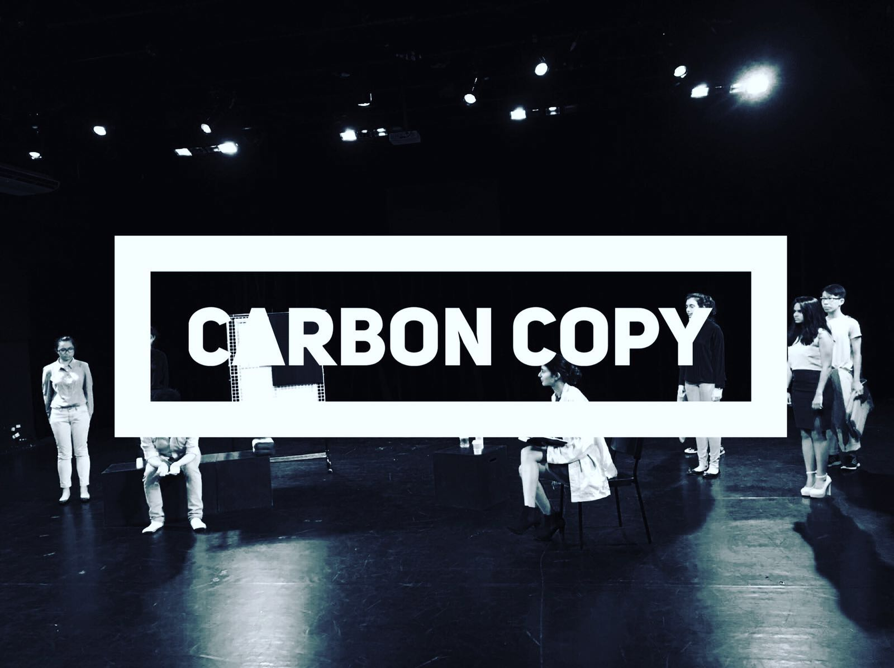

The David Series
Four plays. One man's journey.
Blueprints

“I am living life in Singapore, where each day means a day to chase our dreams, chase it till we are blue in the face and be told to run some more. The landscape you admire is built on the chase; it’s built on the blood, sweat and tears of people who have succeeded, and the bones of those who have failed. You see beauty; I see how far I have to run, with the knowledge that it’s not the end. Math and science keeps those buildings standing, efficiency keeps this country going, not poetry, not imagination and certainly not wonder.”
David
Blueprints follows the journey of David, a man who lives his life through Science and pragmatism. Ideas like poetry and beauty don't have a place in his life. He meets a woman, Emma, who dares him to look more closely at the landscape in his life, and to see the beauty it has to offer. Far from the typical boy-meets-girl story, Blueprints will have you examining the value of your life and see a mirror of your own journey in David's.
Carbon Copy
The scene opens to a swimming pool, specifically the swimming pool at Blue River Condominium. David enters. He moves to sit, but the pull of the water is far too strong. He finds himself moving towards the swimming pool, staring into its blank depths, wishing for answers, for closure, yet at the same time knowing that both eluded him. He was doomed to this state of half existence. He sighs and walks to the edge of the pool. His foot hovers over the water, as if to sink its liquid folds. But it doesn’t. David moves over to the deck chairs, lies down and closes his eyes.
Carbon Copy continues the journey of David, a man trying to come to terms with the hand life as dealt him, caught between a place of resentment and a place of healing. As the play progresses, he is surrounded by people who try to help him; his friend Stella, who has suffered a loss of her own, as well as his psychiatrist. Will David allow himself to heal, or descend further into the pits of his grief?
Whitewash

“My life ended when I took a deep breath. Ironic isn’t it? My death came from trying to breathe. As I opened my mouth, the water gushed in. I kicked hard, trying to break through the surface, to taste a glimpse of air. But the water held me down, my clothes held me down … my mind held me down. I kept thinking, one scream will do it, I just need to muster up my strength to scream once and someone would come. I would be saved. But every time I tried, I just took in more water, like a sponge and then … that’s all I became. I was so filled with water that there was nothing else to save. I was then taken from the water and burned. As the flames licked my flesh, I became nothing but ash and bone. But … I also became heat.”
Emma
David has finally reached a good place in his life; he is doing well at work, he has a girlfriend who he plans to marry, things are looking up for him. He is content. Not blissfully happy or ecstatic, just content. Then, strange things start to happen to him, events that he cannot explain. But these events cause him to consider, can the past ever remain where it is?
The Architect
After leaving the office, David just finds himself wandering around. Where does a person go when there is no destination in mind, when the person in question feels so lost? He looks out at the Singapore River, gazing at the lunch crowd, seeing their camaraderie but feeling untouched by it. The river holds more promise. He looks at it, acknowledging that it would be so easy to lose himself in its watery depths. The pull is so strong that he is alarmed by it and starts to move away forcefully. He enters a nearby café. It is jarringly empty. The only other person is leaning against the counter, reading. She looks up as he comes in.
The Architect is the last play of David’s journey. In the play, we see him reach a state of inertia. He has lost so much, and does not know how to pick up the pieces and move on. He stumbles into a café by the Singapore River and has a conversation with its owner. These conversations form the backbone of The Architect. In a beautiful mesh of dreams and reality, The Architect will bring you back to the roots of David’s journey, to where it all began.